Chapter 3. Data visualization with ggplot2
R4DS github reference: r4ds/visualize.Rmd
3.2 First Steps
As a prerequisite install the tidyverse package.
Question 1: Run ggplot(data = mpg). What do you see?

Running the previous statement displays an empty plot. It only creates a coordinates system that can host additional layers, but unless no layer is added, nothing is displayed.
Question 2: How many rows are in mpg? How many columns?
## Classes 'tbl_df', 'tbl' and 'data.frame': 234 obs. of 11 variables:
## $ manufacturer: chr "audi" "audi" "audi" "audi" ...
## $ model : chr "a4" "a4" "a4" "a4" ...
## $ displ : num 1.8 1.8 2 2 2.8 2.8 3.1 1.8 1.8 2 ...
## $ year : int 1999 1999 2008 2008 1999 1999 2008 1999 1999 2008 ...
## $ cyl : int 4 4 4 4 6 6 6 4 4 4 ...
## $ trans : chr "auto(l5)" "manual(m5)" "manual(m6)" "auto(av)" ...
## $ drv : chr "f" "f" "f" "f" ...
## $ cty : int 18 21 20 21 16 18 18 18 16 20 ...
## $ hwy : int 29 29 31 30 26 26 27 26 25 28 ...
## $ fl : chr "p" "p" "p" "p" ...
## $ class : chr "compact" "compact" "compact" "compact" ...There are 234 rows and 11 columns. The structure statement (str) summarizes the observations (rows) and variables (columns).
Question 3: What does the drv variable describe? Read the help for ?mpg to find out.
mpg$drv is a categorical variable that indicates the wheel type. It has three possible values:
#f= front-wheel driver= rear wheel drive4= 4wd
This information is retrievable with the ?mpg statement in the console or the “Help” tab in R Studio.
Question 4: Make a scatterplot of hwy vs cyl.

In the previous statement we added the geom_point portion to define a scatterplot layer.
Question 5: What happens if you make a scatterplot of class vs drv? Why is the plot not useful?
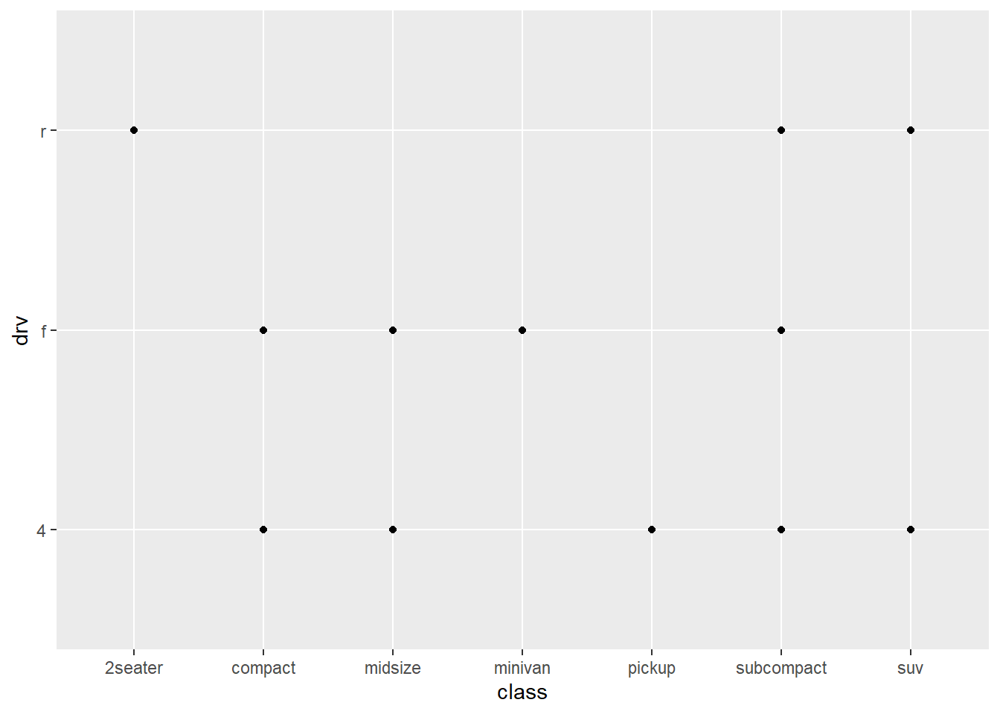
Even if we’re able to plot drv against class, the resulting graph is not very useful since we’re dealing with two categorical variables. It simply output the different combinations of the two features.
3.3 Aesthetic Mappings
Question 1: What’s gone wrong with this code? Why are the points not blue?

To manually set the color of an aesthetic, the color would be an argument of the geom function and therefore should goes outside the aes(). Here’s the correct code:

Question 2: Which variables in mpg are categorical? Which variables are continuous? (Hint: type ?mpg to read the documentation for the dataset). How can you see this information when you run mpg?
In general categorical variables represent types of data which may be divided into finite number of groups while continuous variables have an infinite number of values between any two values. However much depends on the nature of the analysis: have a look at the following post, where people is debating around year variable.
For a nice recap you can take a look at Niklas article.
For the purpose of our analysis we should consider how R treats the data we provide. By using the structure statement or or if you’ve loaded the tidyverse package simply type mpg, we can take a look at the mpg dataset:
## Classes 'tbl_df', 'tbl' and 'data.frame': 234 obs. of 11 variables:
## $ manufacturer: chr "audi" "audi" "audi" "audi" ...
## $ model : chr "a4" "a4" "a4" "a4" ...
## $ displ : num 1.8 1.8 2 2 2.8 2.8 3.1 1.8 1.8 2 ...
## $ year : int 1999 1999 2008 2008 1999 1999 2008 1999 1999 2008 ...
## $ cyl : int 4 4 4 4 6 6 6 4 4 4 ...
## $ trans : chr "auto(l5)" "manual(m5)" "manual(m6)" "auto(av)" ...
## $ drv : chr "f" "f" "f" "f" ...
## $ cty : int 18 21 20 21 16 18 18 18 16 20 ...
## $ hwy : int 29 29 31 30 26 26 27 26 25 28 ...
## $ fl : chr "p" "p" "p" "p" ...
## $ class : chr "compact" "compact" "compact" "compact" ...## # A tibble: 234 x 11
## manufacturer model displ year cyl trans drv cty hwy fl class
## <chr> <chr> <dbl> <int> <int> <chr> <chr> <int> <int> <chr> <chr>
## 1 audi a4 1.8 1999 4 auto~ f 18 29 p comp~
## 2 audi a4 1.8 1999 4 manu~ f 21 29 p comp~
## 3 audi a4 2 2008 4 manu~ f 20 31 p comp~
## 4 audi a4 2 2008 4 auto~ f 21 30 p comp~
## 5 audi a4 2.8 1999 6 auto~ f 16 26 p comp~
## 6 audi a4 2.8 1999 6 manu~ f 18 26 p comp~
## 7 audi a4 3.1 2008 6 auto~ f 18 27 p comp~
## 8 audi a4 q~ 1.8 1999 4 manu~ 4 18 26 p comp~
## 9 audi a4 q~ 1.8 1999 4 auto~ 4 16 25 p comp~
## 10 audi a4 q~ 2 2008 4 manu~ 4 20 28 p comp~
## # ... with 224 more rowsR classifies variable as:
- categorical if labeled as chr
- continuous if labeled as num, int (or dbl)
So for the mpg dataset we may establish the following classification.
| Variable | Type |
|---|---|
| manufacturer | categorical |
| model | categorical |
| displ | continuous |
| year | continuous |
| cyl | categorical |
| trans | categorical |
| drv | continuous |
| cty | continuous |
| hwy | categorical |
| fl | categorical |
| class | categorical |
As said before certain variables might have been classified as categorical instead as continuous (eg: year or cyl). This can be managed by using certains functions (as.factor() for instance).
Question 3: Map a continuous variable to color, size, and shape. How do these aesthetics behave differently for categorical vs. continuous variables?
If we map cyl we can create the following plots:
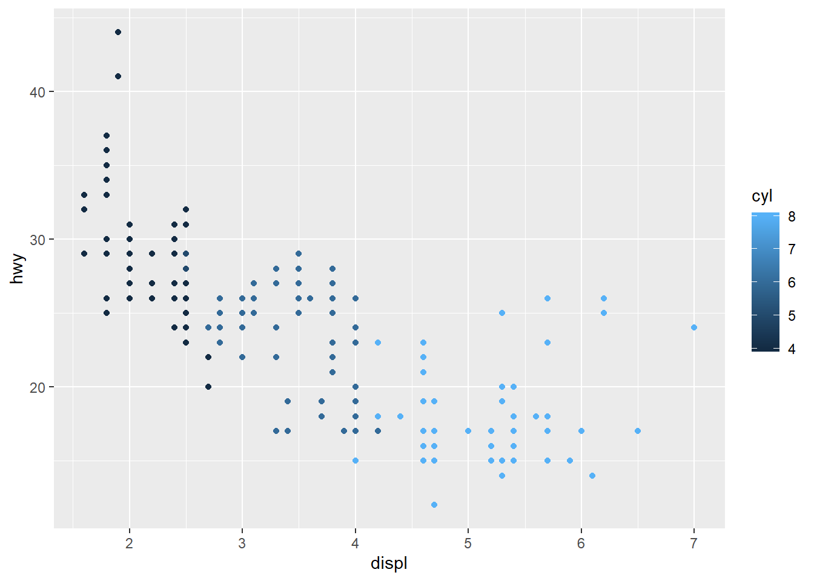
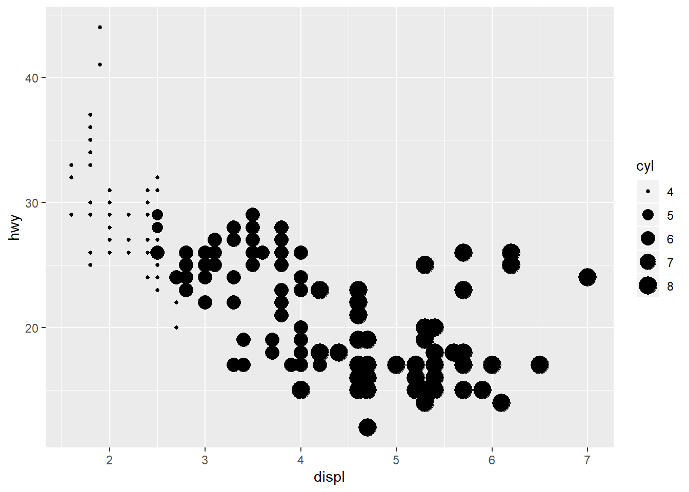
#ggplot(data = mpg) + geom_point(mapping = aes(x = displ, y = hwy, shape = cyl))
#Error: A continuous variable can not be mapped to shapeWhen mapping continuous variables, ggplot2 produces a scale that varies in color (first plot), size (second plot) or an error for the shape (third plot). Mapping continuous variables in fact does not gave valuable information. As said before a variable misclassified as continuous might be managed with the as.factor() function as shown below:
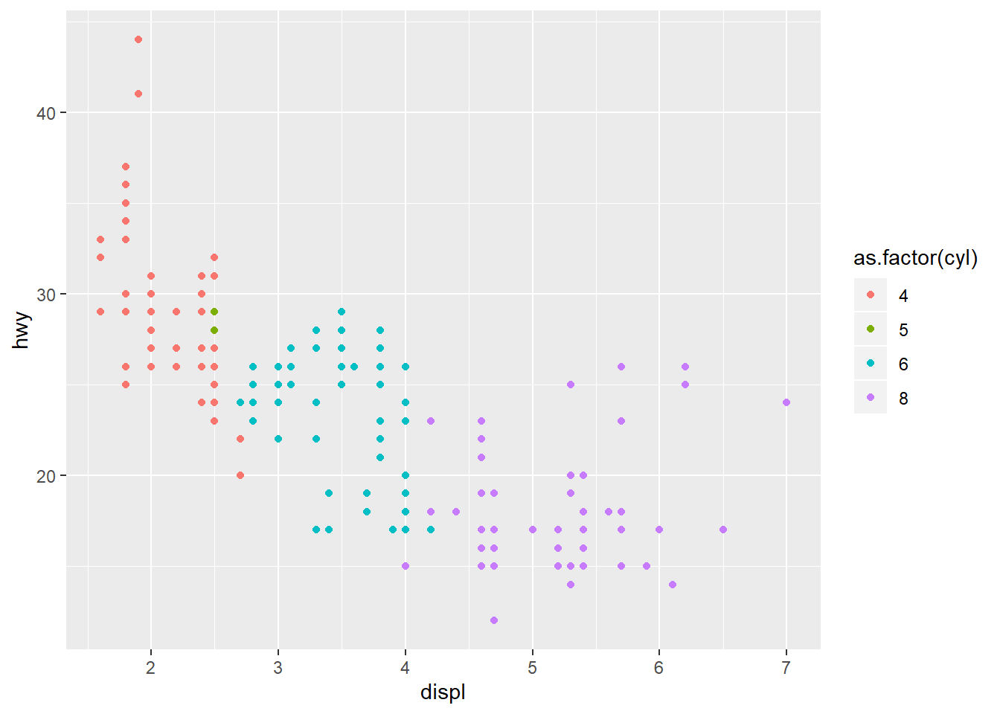
Question 4: What happens if you map the same variable to multiple aesthetics?
Let’s come back to the categorical variable drv. If we map it to the three aesthetics color, size, shape, the resulting plot is a combination of the three in the same graph.
ggplot(data = mpg) +
geom_point(mapping = aes(x = displ, y = hwy, color = drv, size = drv, shape = drv))## Warning: Using size for a discrete variable is not advised.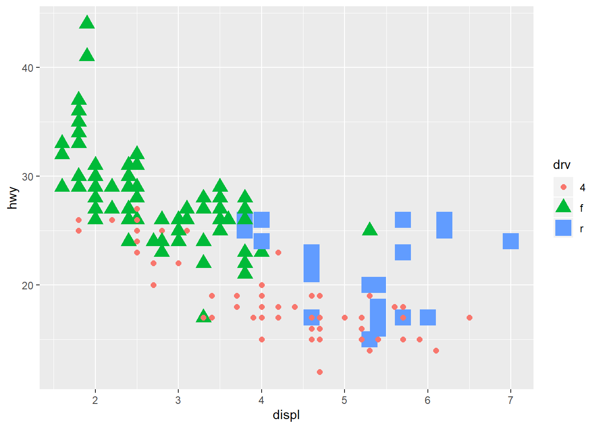
Question 5: What does the stroke aesthetic do? What shapes does it work with? (Hint: use ?geom_point)
The stroke aesthetic let you modify the width of the border, for shapes that have a border (shapes code from 21 to 25).
ggplot(data = mpg) + geom_point(mapping = aes(x = displ, y = hwy),
shape = 25, stroke = 2, fill = 'green')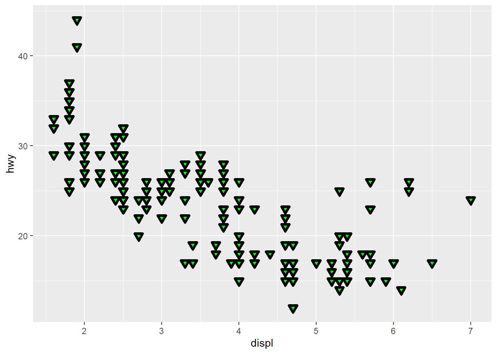
Question 6: What happens if you map an aesthetic to something other than a variable name, like aes(colour = displ < 5)? Note, you’ll also need to specify x and y.
Let’s take an example:

Once you specify a condition, a boolean condition, ggplot2 evaluates the condition and produces a plot accordingly.
3.5 Facets
Question 1: What happens if you facet on a continuous variable?
Let’s use a new continuous variable as argument of the facet_wrap option (for instance cty/hwy), and plot the data for the first 5 observations. We obtain:
ggplot(data = head(mpg,5)) + geom_point(mapping = aes(x = displ, y = hwy)) +
facet_wrap(~ cty/hwy, nrow = 2)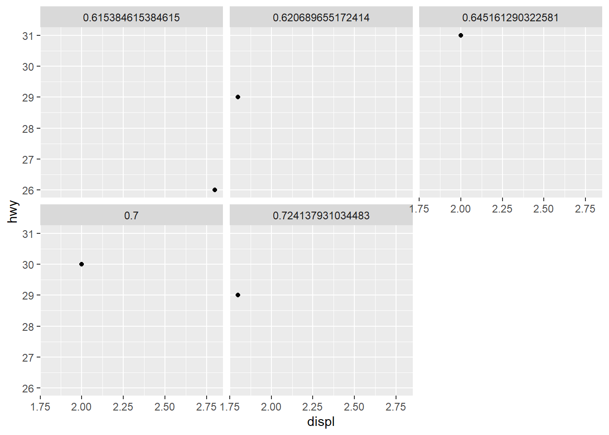
In using a continuous variable, for each distinct value a facet is created and since the variable is continuous we create an unuseful number of subplots.
Question 2: What do the empty cells in plot with facet_grid(drv ~ cyl) mean? How do they relate to this plot?
Let’s show the empty cells in the plot:

These empty cells mean that there are no observations for that combination of facet’s variables. This can be checked with the following statements:
subset(mpg, drv == "5" & cyl == "4")
subset(mpg, drv == "f" & cyl == "8")
Since those observations are not within the dataframe they’re not plotted.
Question 3: What plots does the following code make? What does . do?


Those chunks in fact plot the very same graph as those below, they’re are simply transposed. Think the facets as rows and columns of a matrix. The first chunk represent a matrix with 3 rows and 1 column while the second 1 row x 3 columns. You may notice that they’ve been scaled for sake of representation but in fact they display the same information.
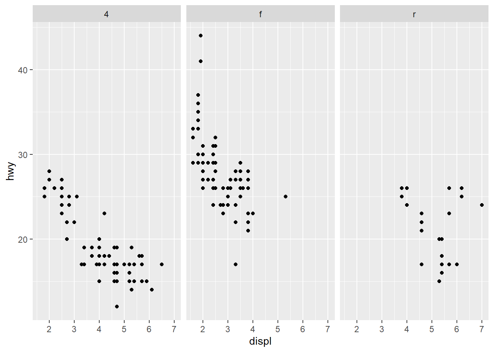
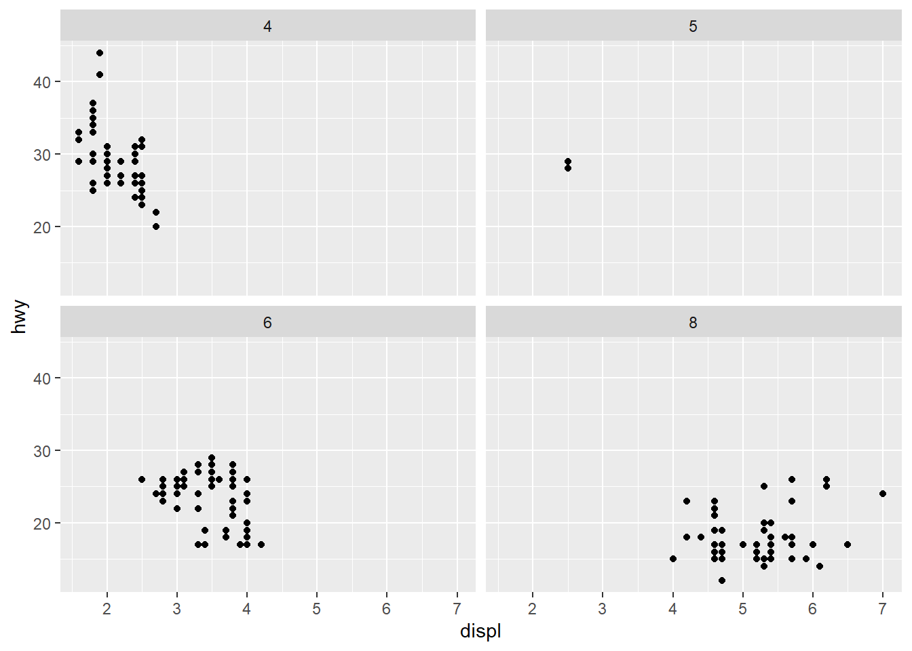
Unlike facet_wrap, facet_grid need two arguments, but thanks to the . character you can use one variable by “filling” the second required argument.
Question 4: Take the first faceted plot in this section (plots below). What are the advantages to using faceting instead of the colour aesthetic? What are the disadvantages? How might the balance change if you had a larger dataset?

Using faceting let you “isolate” a particular variable, and represent its respective datapoints. Datapoints that falls in several buckets can be distinguished. For example this combination subset(mpg, displ == 4.7 & hwy == 12), is represented in the color aesthetic as suv class. With faceting you’re able to see that beside suv, at least one datapoint in the pickup class has such values.
The disadvantage of faceting happens when the variable’s factor values increases. It becomes dificult to visually compare an excessive amount of plots. In that case a representation with the color aesthetic would be beneficial.

Question 5: Read ?facet_wrap. What does nrow do? What does ncol do? What other options control the layout of the individual panels? Why doesn’t facet_grid() have nrow and ncol arguments?
ncol e nrow let you specify the number of columns/rows you wish to use to organise the layout of the facets subplots. Another options controls available is scales: it let you “uncouple” the scales of each facet from the overall layout scale (all, only x axis or only y axis).
face_grid implicitly require a couple of variables in the formula, the nrow and ncol values are implicitly retrieved from the distinct values of the variables.
Question 6: When using facet_grid() you should usually put the variable with more unique levels in the columns. Why?
Usually monitors are larger than taller. Using the variable with more unique levels in the colum let you display plots with fewer rows than columns, resulting in an improved readability. Take a look a the following plot with the trans variable (10 distinct values) and drv (3 distinct values).
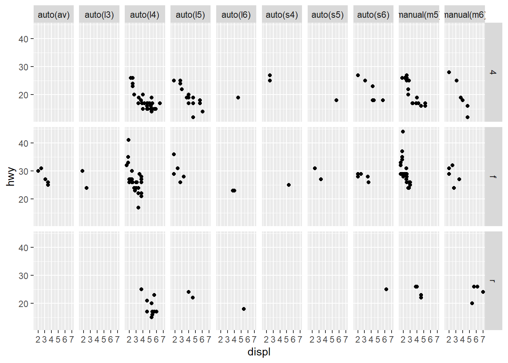
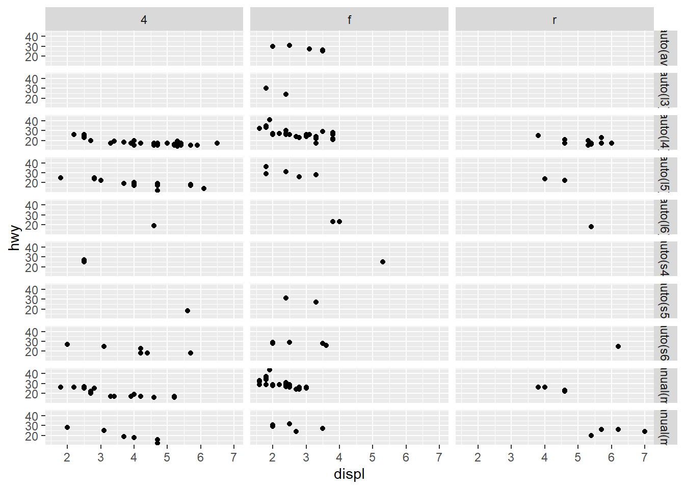
The first is more readable.
3.6 Geometric Objects
Question 1: What geom would you use to draw a line chart? A boxplot? A histogram? An area chart?
We can use the following geometric objects:
| Type | GeomObject |
|---|---|
| line chart | geom_line() |
| box plot | geom_boxplot |
| histogram | geom_histogram() |
| area chart | geom_area() |
Question 2: Run this code in your head and predict what the output will look like. Then, run the code in R and check your predictions.
ggplot(data = mpg, mapping = aes(x = displ, y = hwy, color = drv)) +
geom_point() +
geom_smooth(se = FALSE)The code should represent a scatterplot of hwy values as a function of displ grouped by drv. From the geom_smooth help function we’re able to see that trending lines would be displayed but without confidence intervals, since the se parameter is set to FALSE.
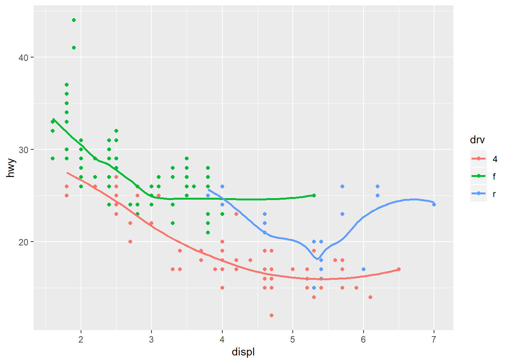
Question 3: What does show.legend = FALSE do? What happens if you remove it? Why do you think I used it earlier in the chapter?
The code removes the plot legend.
ggplot(data = mpg) +
geom_smooth(
mapping = aes(x = displ, y = hwy, color = drv),
show.legend = TRUE
)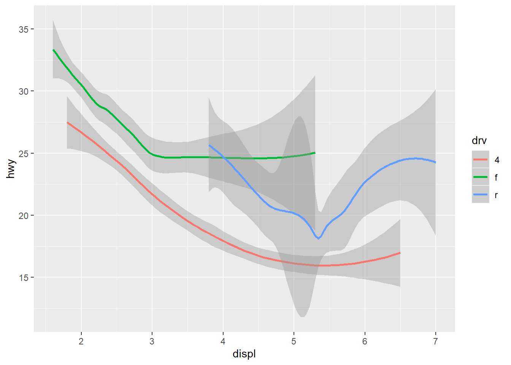
It was previously used to make an easier comparision between plots. Without setting this option, the legend would have been displayed with the consequence of compressing the last plot.
Question 4: What does the se argument to geom_smooth() do?
It removes the confidence intervals since the se parameter has been set to FALSE.
Question 5: Will these two graphs look different? Why/why not?
ggplot(data = mpg, mapping = aes(x = displ, y = hwy)) +
geom_point() +
geom_smooth()
ggplot() +
geom_point(data = mpg, mapping = aes(x = displ, y = hwy)) +
geom_smooth(data = mpg, mapping = aes(x = displ, y = hwy))The two graphs will look the same, since define the aestethic in the ggplot function directly extends it to the single geometrics.
Question 6: Recreate the R code necessary to generate the following graphs.
 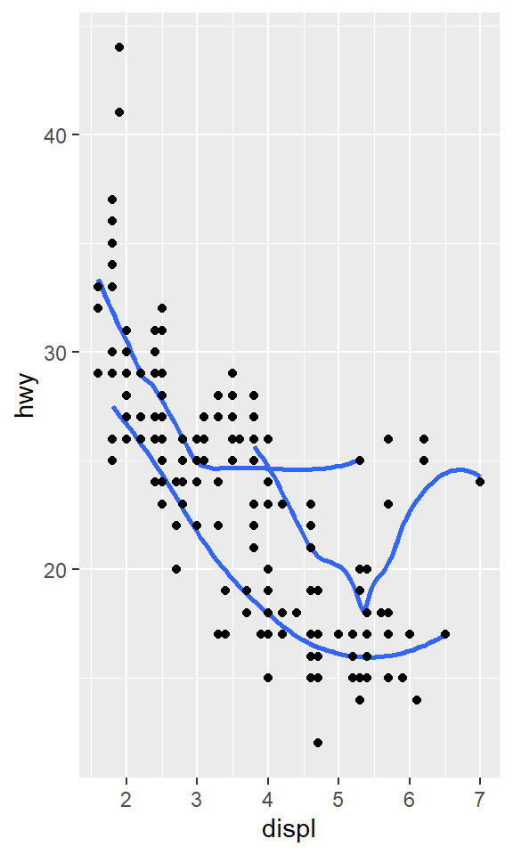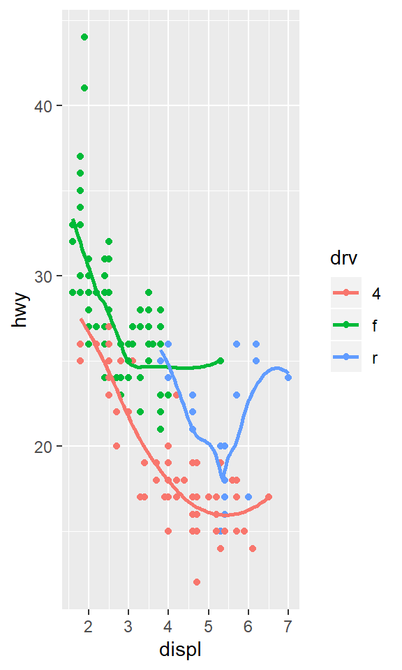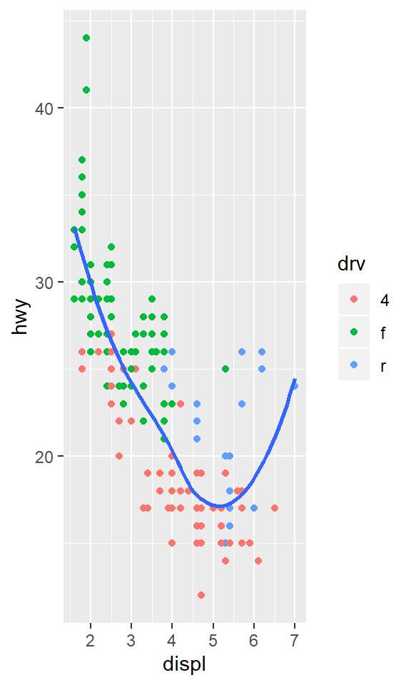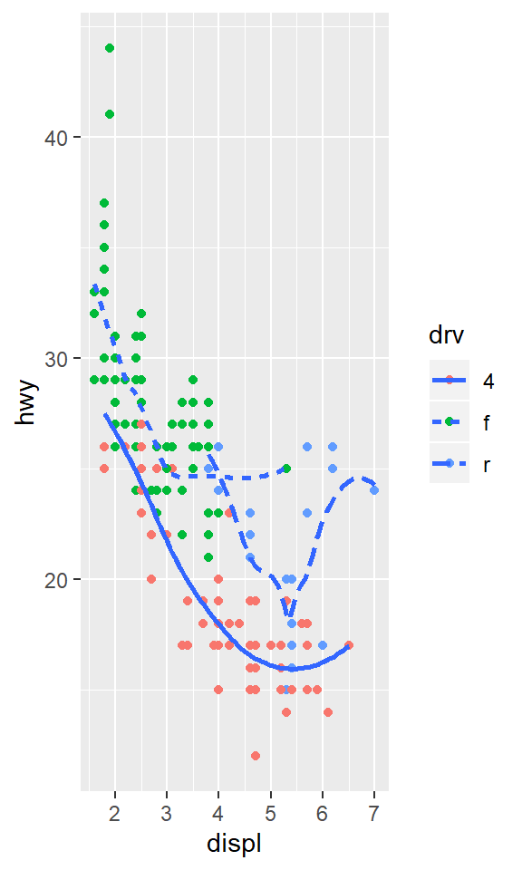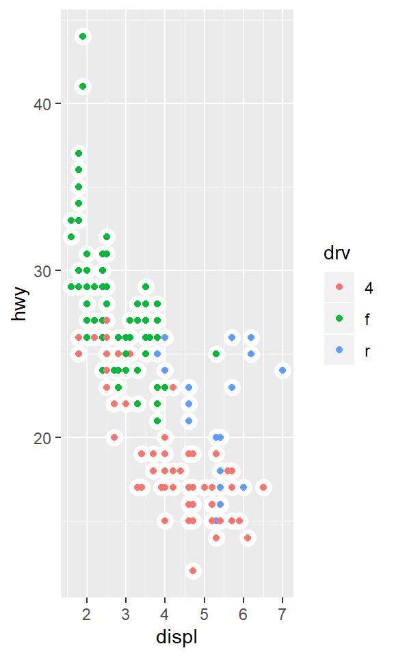
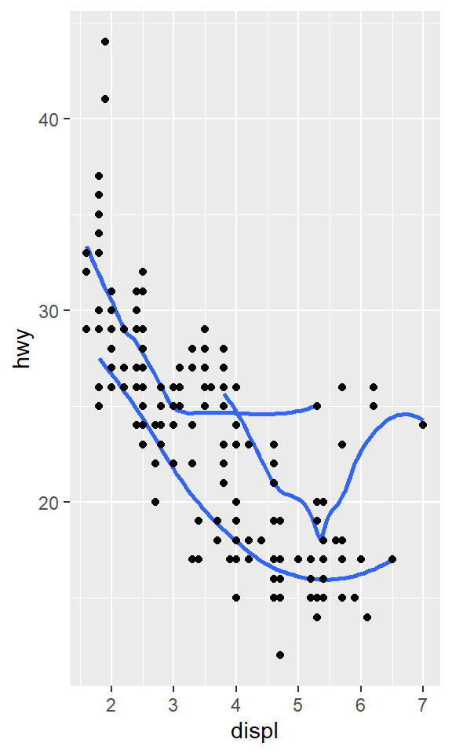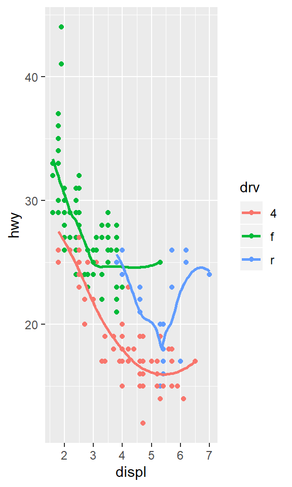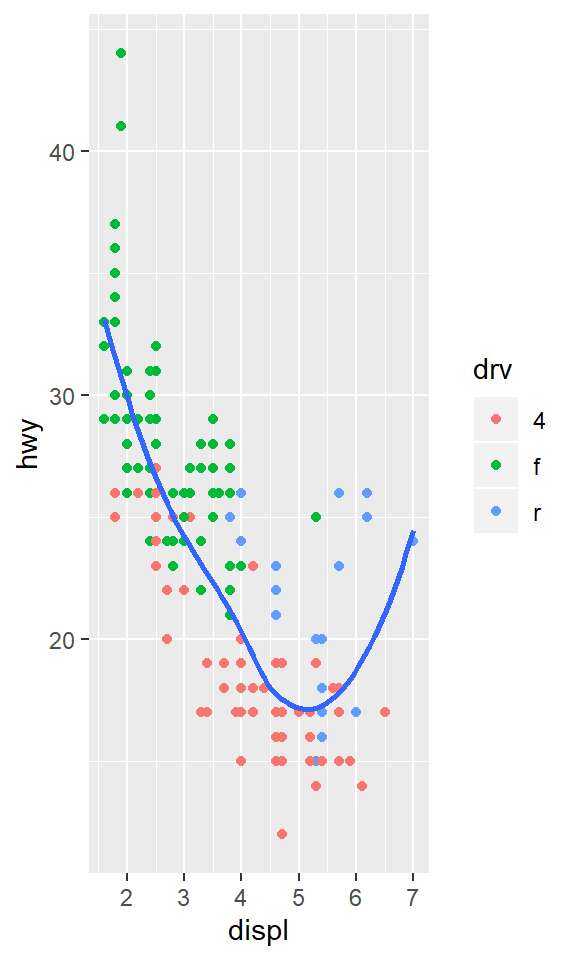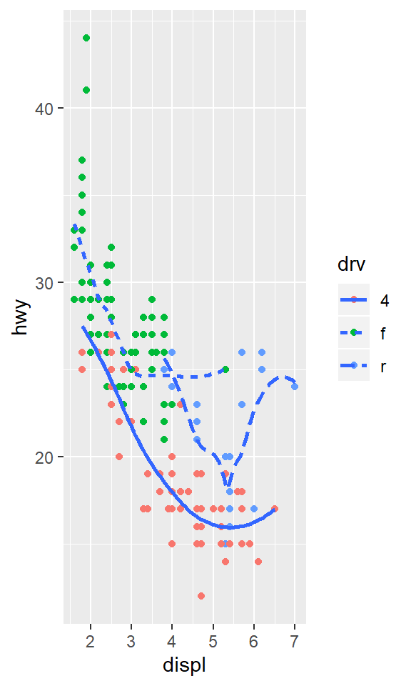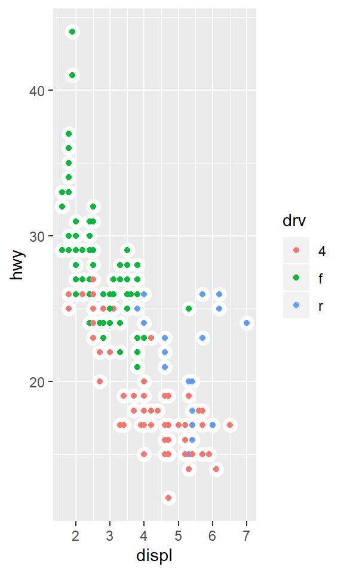
ggplot(data = mpg, mapping = aes(x = displ, y = hwy)) +
geom_point() +
geom_smooth(se = FALSE)
ggplot(data = mpg, mapping = aes(x = displ, y = hwy)) +
geom_smooth(aes(group = drv), se = FALSE) +
geom_point()
ggplot(data = mpg, mapping = aes(x = displ, y = hwy, color = drv)) +
geom_point() +
geom_smooth(se = FALSE)
ggplot(data = mpg, mapping = aes(x = displ, y = hwy)) +
geom_point(aes(color = drv)) +
geom_smooth(se = FALSE)
ggplot(data = mpg, mapping = aes(x = displ, y = hwy)) +
geom_point(aes(color = drv)) +
geom_smooth(aes(linetype = drv), se = FALSE)
ggplot(data = mpg, mapping = aes(x = displ, y = hwy)) +
geom_point(size = 4, colour = "white") +
geom_point(aes(colour = drv))3.7 Statistical Transformations
Question 1: What is the default geom associated with stat_summary()? How could you rewrite the previous plot to use that geom function instead of the stat function?
The default geom is geom_pointrange.
The stated plot is the one below.
ggplot(data = diamonds) +
stat_summary(
mapping = aes(x = cut, y = depth),
fun.ymin = min,
fun.ymax = max,
fun.y = median
)
The code can be rewritten as:
ggplot(data = diamonds) +
geom_pointrange(
mapping = aes(x = cut, y = depth),
stat="summary",
fun.ymin = min,
fun.ymax = max,
fun.y = median
)
Question 2: What does geom_col() do? How is it different to geom_bar()?
From the help documentation the geom_bar() makes the height of the bar proportional to the number of cases in each group. If the heights of the bars are required to represent values in the data, geom_col() should be used instead.
geom_bar()usesstat_count()and counts the number of cases at each x positiongeom_col()usesstat_identity()and leaves the data as is

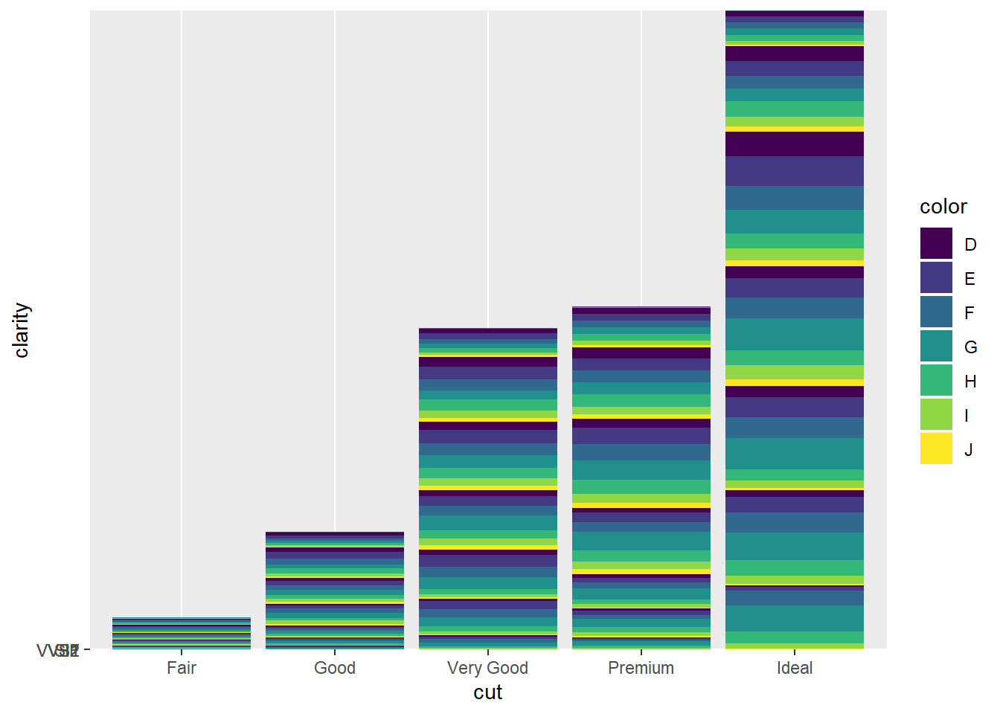
Question 2: Most geoms and stats come in pairs that are almost always used in concert. Read through the documentation and make a list of all the pairs. What do they have in common?
Here’s some of the geoms/stats pairs.
| geoms | stats |
|---|---|
| geom_histogram | stat_bin |
| geom_bin2d | stat_bin_2d |
| geom_hex | stat_bin_hex |
| geom_bin2d | stat_boxplot |
| geom_boxplot | stat_contour |
| geom_contour | stat_count |
| geom_count | stat_density |
| geom_density | stat_density_2d |
| geom_density_2d | stat_density2d |
| geom_density2d | stat_qq |
| geom_qq | stat_qq_line |
| geom_qq_line | stat_quantile |
| geom_quantile | stat_sf |
| geom_sf | stat_smooth |
| geom_smooth | stat_bin |
Generally the share the same suffix (but not in every case), and have each other as the default geom for a stat and vice versa (look geom_bar() and stat_count() for instance).
Question 3: What variables does stat_smooth() compute? What parameters control its behaviour?
From the help documentation the computed variables are:
y- predicted value- ymin - lower pointwise confidence interval around the mean
- ymax - upper pointwise confidence interval around the mean
- se - standard error
The parameters that control stat_smooth() behaviour are:
method- smoothing method (function) to useformula- formula to use in smoothing functionse- display the confidence interval around smooth
Question 3: In our proportion bar chart, we need to set group = 1. Why? In other words what is the problem with these two graphs?
If group = 1 is not included the bar proportion is set to 100%.


3.8 Position adjustments
Question 1: What is the problem with this plot? How could you improve it?

The plot is affected by overplotting. It can be handled by adding some noise with the jittering feature.
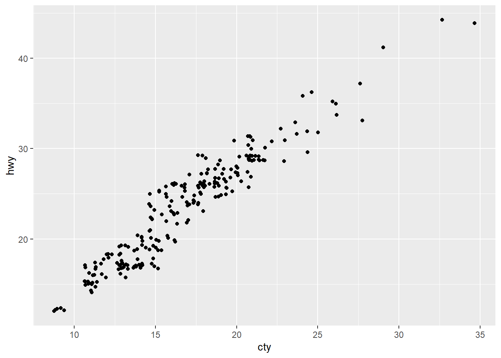
Question 2: What parameters to geom_jitter() control the amount of jittering?
From the help documentation the parameters are width and height. They set the amount of vertical and horizontal jitter.
Question 3: Compare and contrast geom_jitter() with geom_count().
geom_count() express the presence of multiple plots by increasing the size of plots while geom_jitter() apply a small amount of noise to data when overplotting is present.
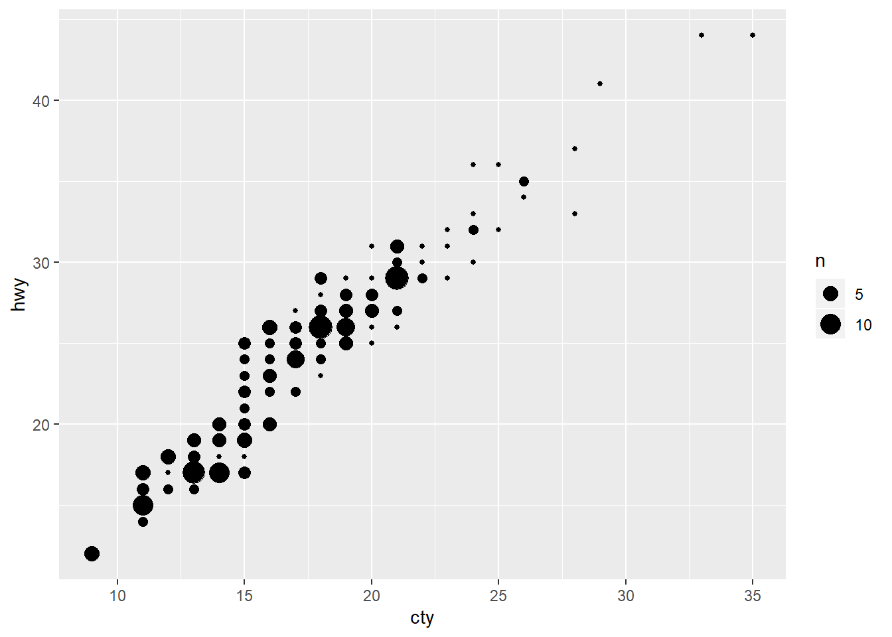
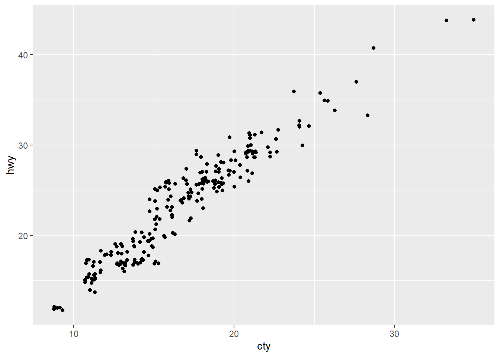
Question 4: What’s the default position adjustment for geom_boxplot()? Create a visualisation of the mpg dataset that demonstrates it.
The default position adjustement is dodge2.
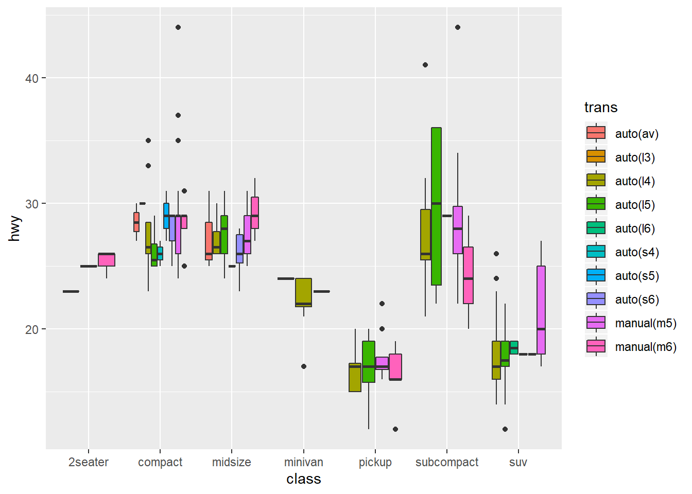
3.9 Coordinate systems
Question 1: Turn a stacked bar chart into a pie chart using coord_polar().
The chart can be made by using the diamond dataset for instance.

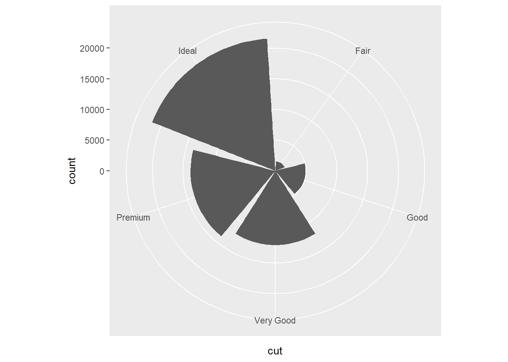
Question 2: What does labs() do? Read the documentation.
From the help documentation the labs() statement modify axis, legend, and plot labels.
ggplot(data = diamonds, mapping = aes (x = carat, y = price)) + geom_point() +
labs(
title = "Price per carat",
subtitle = "a labs example",
caption = "hello",
tag = "study"
)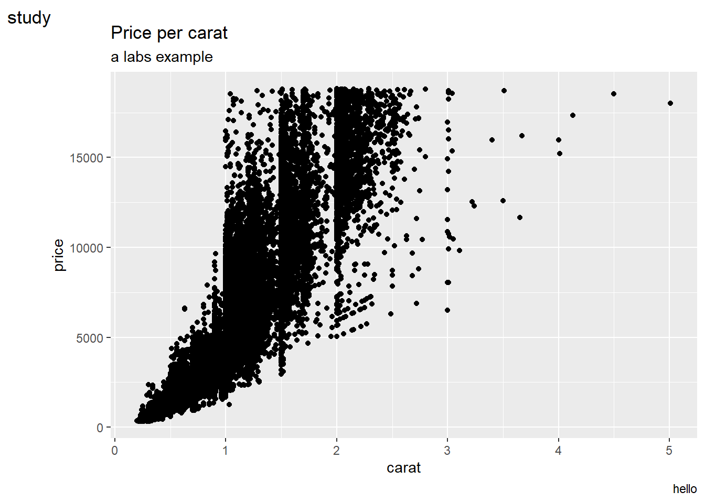
Question 3: What’s the difference between coord_quickmap() and coord_map()?
From the help documentation the coord_map() projects a portion of the earth, which is approximately spherical, onto a flat 2D plane using any projection defined by the mapproj package. Map projections do not, in general, preserve straight lines, so this requires considerable computation. coord_quickmap○ is a quick approximation that does preserve straight lines. It works best for smaller areas closer to the equator.
nz <- map_data("nz")
ggplot(nz, aes(long, lat, group = group)) +
geom_polygon(fill = "white", colour = "black")
ggplot(nz, aes(long, lat, group = group)) +
geom_polygon(fill = "white", colour = "black") +
coord_quickmap()
ggplot(nz, aes(long, lat, group = group)) +
geom_polygon(fill = "white", colour = "black") +
coord_map()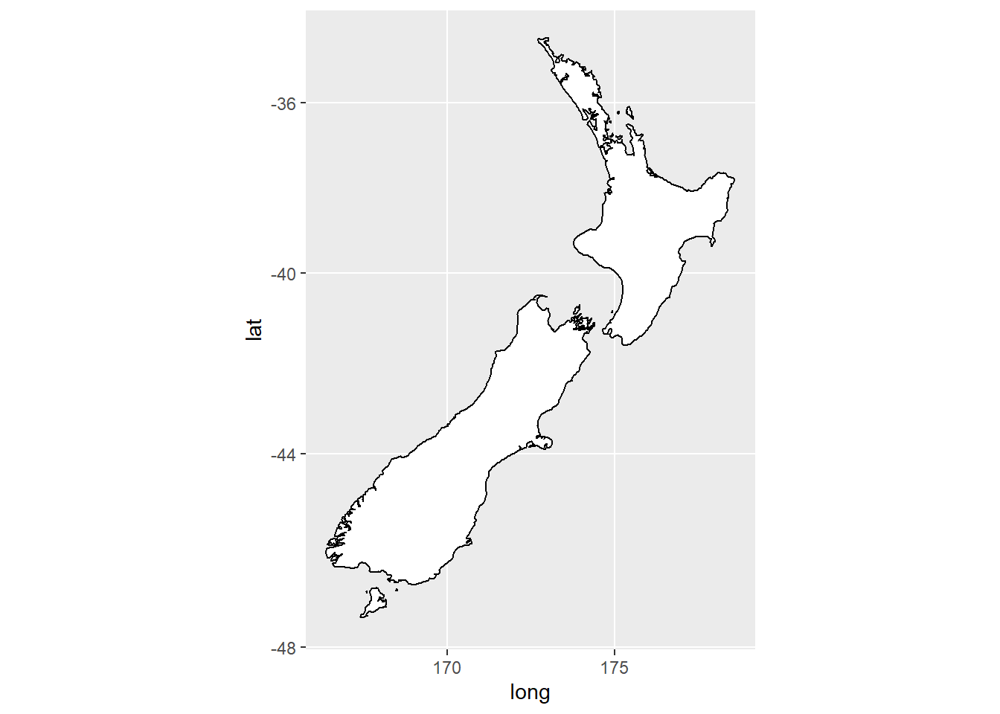
Question 4: What does the plot below tell you about the relationship between city and highway mpg? Why is coord_fixed() important? What does geom_abline() do?
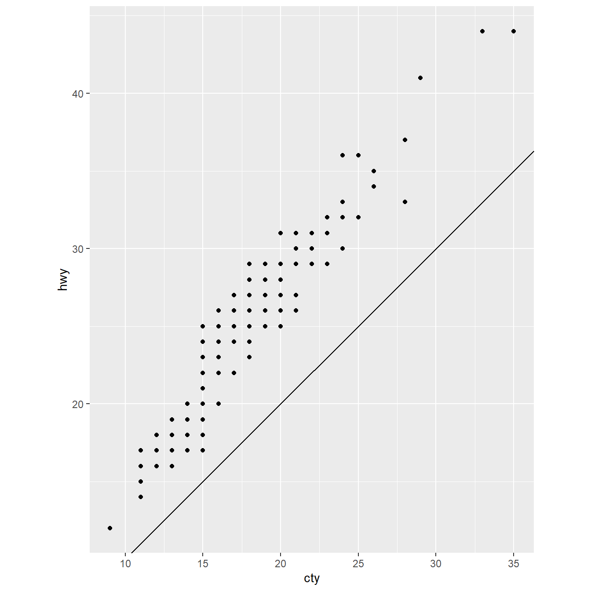
The plot shows a positive correlation between cty and hwy.
From the help documentation the coord_fixed() is important because a fixed scale coordinate system, forces a specified ratio between the physical representation of data units on the axes. The ratio represents the number of units on the y-axis equivalent to one unit on the x-axis. The default, ratio = 1, ensures that one unit on the x-axis is the same length as one unit on the y-axis.
geom_abline() is a reference line (aka rule) useful for comparisons. In this case is a 45 degree line that shows equality between x and y axis values.